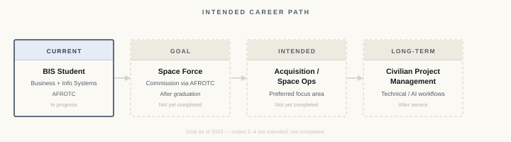

Direction
Project management sits at the center of how work gets done — defining scope, coordinating people, tracking progress, and closing the gap between intent and delivery. As a Business and Information Systems student, I'm building the foundation for exactly that.
Role Research
Define what the project must accomplish and set clear boundaries on what's in and out of scope.
Break work into concrete steps, assign ownership, and sequence against realistic estimates.
Keep the right people informed with consistent updates on status, decisions, and changes.
Catch risks early. Resolve or escalate blockers before they stall delivery.
Coordinate people, tools, and budget with clear ownership at every level.
Record what was decided, by whom, and why — keeps teams aligned and prevents revisiting closed questions.
Path
Pursuing a Space Force commission through AFROTC, with intended focus in acquisition or space operations — then civilian project management after service.
This is an intended path. I have not yet commissioned. The skills transfer: structured planning, accountability, technical systems, and acquisition work.
Lead under uncertainty. Stay accountable for outcomes.
Documented plans with defined objectives, contingencies, and clear roles.
Technical fluency is foundational to managing projects around complex systems.
Maintain focus on the end goal as conditions change.
Requirements, contracts, vendors, and delivery timelines.
Post-service: civilian PM carrying planning discipline and systems exposure.

Skills & Focus Areas